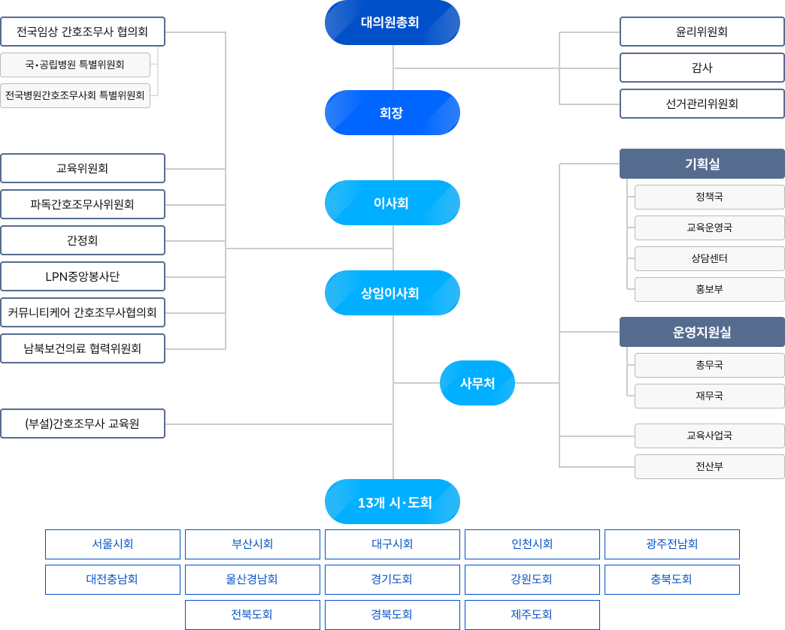

대한간호조무사협회 부서안내
※ 교육관련 문의는 교육운영국 또는 교육사업국
총무국
-
총무국 업무 총괄
02-6951-4020
-
대체인력지원사업 총괄 및 상훈 등
02-6951-4573
-
임직원 및 협회 일정 관리 등
02-6951-4171
-
협회 자산,비품, 계약업무
02-6951-4180
재무국
-
재무국 업무 총괄
02-6951-4010
-
회계, 세무, 자금 등 업무
02-6951-4172
-
수익사업, 국고사업, 예산 업무
02-6951-4021
-
자금 입·출금 및 제예금 업무
02-6951-4015
-
회계, 세무, 급여 업무
02-6951-4023
정책국
-
정책국 업무 총괄
02-6951-4150
-
간호조무사 조직화 및 조직화 기구 운영
02-6951-4174
-
보건의료정책 조사·연구, 입법·제도개선 실무
02-6951-4012
전산부
-
협회 전산시스템 운영 관리
02-6951-4014
-
협회 홈페이지, 회원 관리
02-6951-4574
홍보부
-
홍보부 업무 총괄 및 간호조무사 매거진 기획 발간, 인터넷 간호조무사 신문 관리
02-6951-4170
-
협회 SNS 및 온라인 콘텐츠 제작, 운영, 언론 대응, 사진 촬영, 기사 작성
02-6951-4044
교육사업국
-
교육사업국 및 간호조무사교육원 업무 총괄
02-6951-5997
-
국고지원사업(직무 및 치매전문교육 등) 기획 및 운영
02-6951-4177
-
간호조무사 직무전문교육 기획 및 운영
02-6952-2334
-
방문간호 간호조무사 기획 및 운영
02-6951-4086
교육운영국
-
교육운영국 업무 총괄
02-6951-4018
-
보수교육 관리 및 실무
02-6951-4026
-
실시기관 보수교육 및 온라인 콘텐츠 관리 및 실무, 보수교육 실무
02-6951-4178
-
자격신고 관리 및 실무, 보수교육 업무 지원 등
02-6951-4009